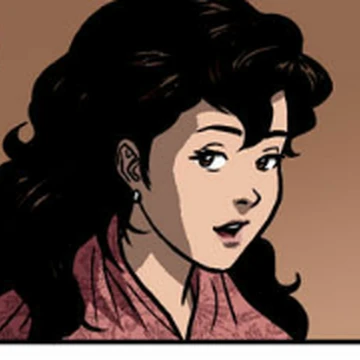
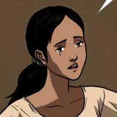

|
Padre Damaso |
He is an old Spanish Priest who lived along with the Filipinos almost half of his life although he is clearly not well in speaking the language. Father Damaso is also well know as Ibarra's enemy in the story. |
|  |
Maria Clara |
Maria Clara is known as the daughter of Kapitan Tiago but Father Damaso as the godfather. She is also known as the lover of Ibarra. |
 |
Crisostomo Ibarra |
Juan Crisostomo Ibarra is a wealthy young man who studied in Europe. After returning to the Philippines, he discovered about his fathers death. |
 |
Kapitan Tiago |
Kapitan Tiago was a not so rich man in San Diego until he met his lover named Dona Pia Alba and continued to make a business together. He is also Maria Clara's "father". |
|  |
Tiya Isabel |
Tiya Isabel is Kapitan Tiyago's cousin who helped in raising Maria Clara. She also somehow worked as a server in Tiago's property. |